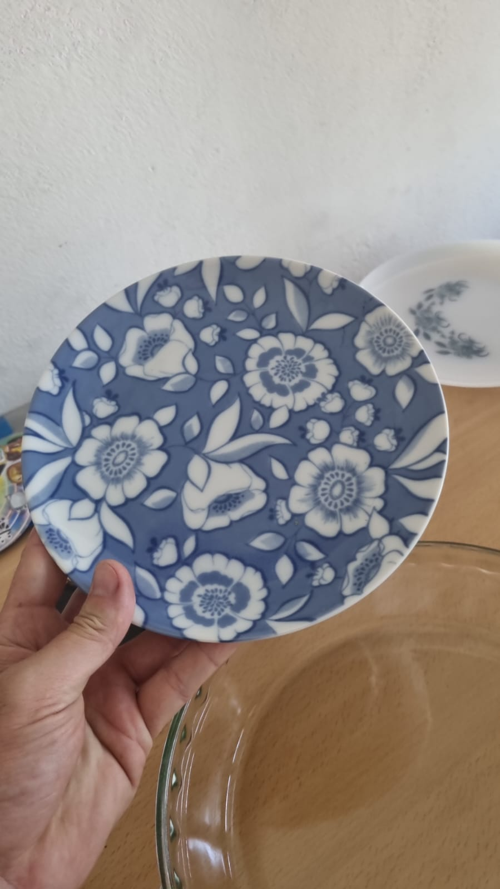

Deleita tus sentidos con este encantador set de café, ideal para momentos especiales y reuniones con amigos. Este conjunto, hecho de porcelana antigua, incluye:
1 jarra de café con motivo floral
6 tazas de café tamaño ristretto
6 platos de café
1 jarra de leche
1 azucarera con tapa
Perfecto para disfrutar de un delicioso café ristretto o un capuchino. ¡Haz que cada sorbo sea una experiencia única!

Plato de Postre Floral
Este elegante plato de postre, adornado con un hermoso diseño floral, es el toque perfecto para tus celebraciones. Hecho de cerámica de alta calidad, cada plato cuenta una historia de elegancia y tradición.
Ideal para presentar tus dulces favoritos, este plato hará que cualquier postre luzca aún más apetitoso.
Plato de Postre Festival
Celebra cada ocasión con este vibrante plato de postre, que captura la esencia de la festividad. Perfecto para servir tus delicias navideñas o cualquier postre en una reunión familiar.
Este plato no solo es funcional, sino que también es una obra de arte que realza la belleza de tu mesa.
Cacerola Pyrex Ovalada
Descubre la versatilidad de la cocina con esta cacerola Pyrex ovalada. Ideal para asados, guisos y más, esta pieza de vidrio resistente es perfecta para aquellos que disfrutan cocinar con estilo y comodidad.
Su diseño atemporal se adapta a cualquier cocina, convirtiéndola en un esencial que no querrás perder.
Fuente Pyrex Cuadrada
Esta fuente cuadrada de Pyrex es perfecta para tus preparaciones al horno, desde lasaña hasta pasteles. Con su diseño robusto y elegante, es ideal tanto para cocinar como para presentar tus platos.
Convierte cada comida en una experiencia gourmet.
Jarrón Hermético
Mantén tus ingredientes frescos y organizados con este hermoso jarrón hermético. Ideal para almacenar cereales, pastas o cualquier alimento que necesite conservación. Su diseño vintage aporta un toque de calidez a tu cocina.
¡Funcionalidad y estilo en un solo producto!
Jarrón Decorativo
Este jarrón decorativo es una pieza única que elevará la decoración de cualquier espacio. Perfecto para exhibir flores frescas o como una pieza decorativa por sí mismo, su diseño antiguo cuenta con detalles que resaltan su calidad.
Agrega un toque de elegancia y estilo a tu hogar.
Plato Hondo Festival
Este plato hondo, adornado con un colorido diseño de festival, es ideal para sopas, ensaladas y más. Hecho de cerámica de calidad, cada plato es una obra de arte que combina funcionalidad con belleza.
Disfruta de tus comidas en un plato que refleja alegría y tradición.
Fuente Rectangular Pyrex
Esta fuente rectangular de Pyrex es esencial para los amantes de la cocina. Su diseño permite una cocción uniforme y su aspecto elegante la hace perfecta para servir en la mesa. Ideal para gratinados y asados, es un artículo que no puede faltar en tu hogar.
¡Transforma tu cocina en un verdadero taller gourmet!